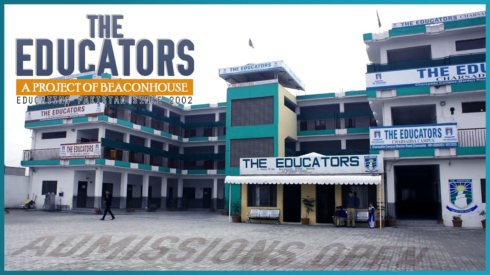
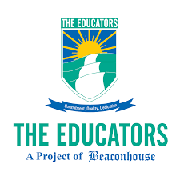
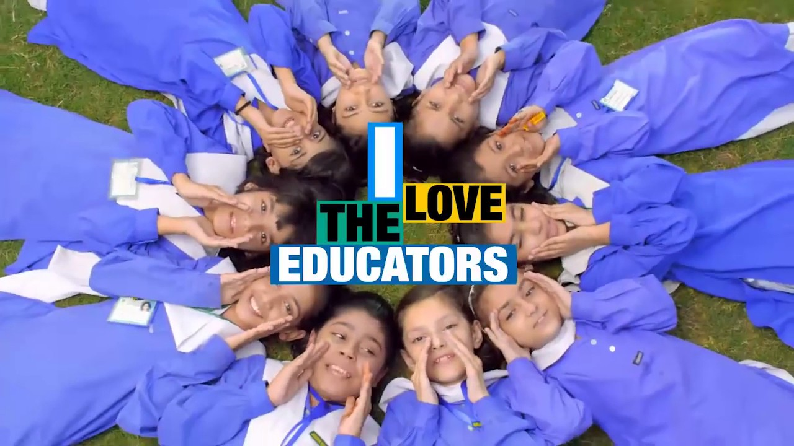
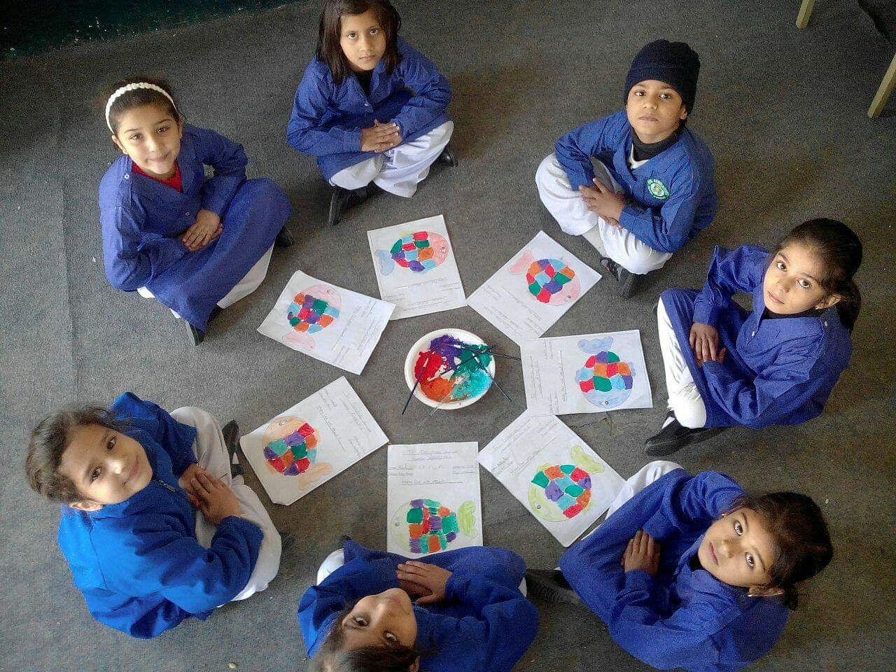

The Educators
Established in November 1975 as the Les Anges Montessori Academy for toddlers, Beaconhouse has since grown into a global network of private schools, institutes, and universities, imparting distinctive and meaningful education to students from pre-school to post-graduation.The Educators, a project of Beaconhouse, has completed more than sixteen years of service to educational development across the country with remarkable success.Established in 2002, it now has 900+ campuses & the market leader in Pakistan's educational landscape with a presence in over 225+ cities and a student strength exceeding 200,000+.This makes The Educators outreach the largest compared to any other private school in the world.  WHY YOU SHOULD JOIN US
By joining our network of associates, you are investing in a secure business venture that is yours. You partner with a well-established and respected organization with an impressive history of accomplishments and equity in the field of education.  Educators Edge
The Educators in collaboration with Knowledge Platform brings you The Educators Edge that will use communication and information technologies to enhance and expand the traditional role of education in The Educators community. We believe the basic goal of education has not changed, that is to prepare our students for life-long learning and success in an evolving society. However, the tools and instructional methods to achieve these goals have advanced dramatically. Technologies such as computers, networks, and wide area communications offer tremendous opportunities to students and teachers as a way to improve life within our community and a link to the outside world. It is a captivating online learning space providing students with the tools they need in order to be successful learners both in the classroom and beyond.